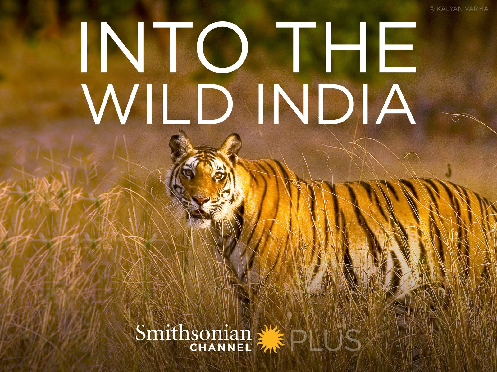

Kiang Films
Films
Camera, research and production for wildlife films
These are the films our crew has worked on, and the role each of us played. Kiang Collective was set up in 2024; credits for earlier films are in our own names.
Coming in 2026
Upcoming
Terra Mater
2026
2026
Wild India
Panchami Gaitonde — Camera
Pradeep Hegde — Camera
Kiang Collective — Research and line production
Pradeep Hegde — Camera
Kiang Collective — Research and line production
Terra Mater
2026
2026
Wild Day in Singapore
Panchami Gaitonde — Assistant Producer
Pradeep Hegde — Camera
Pradeep Hegde — Camera
NHK
Natural history film for NHK
Panchami Gaitonde — Camera
Pradeep Hegde — Camera
Kiang Collective — Research, line production and field production
Pradeep Hegde — Camera
Kiang Collective — Research, line production and field production
Broadcast and theatrical
Feature-length

Raptors: A Fistful of Daggers
Pradeep Hegde — Camera
Two-part series.

Wild Tamil Nadu
Pradeep Hegde — Camera

Project Tiger
Pradeep Hegde — Camera
Feature documentary marking 50 years of Project Tiger.

Wild Karnataka
Pradeep Hegde — Camera

Into the Wild India
Pradeep Hegde — Camera
Not currently available online.
Roundglass Sustain and independent
Short films

Batman and the Baavali: Bats of Bengaluru
Directed and filmed by Pradeep Hegde

The Land of Bears and Boulders: Daroji Sloth Bear Sanctuary
Directed, filmed and edited by Pradeep Hegde

The Wilds of Daroji
Directed, filmed and edited by Pradeep Hegde

Tibetan Sand Fox: The Highland Hunter
Directed, filmed and edited by Pradeep Hegde

The Grandala Blues
Directed, filmed and edited by Pradeep Hegde

Firefox of the Eastern Himalayas: Red Pandas
Directed, filmed and edited by Pradeep Hegde

The Misty Mountains of Singalila
Directed, filmed and edited by Pradeep Hegde

A Dust Spa: Malabar Pied Hornbills of Dandeli
Directed, filmed and edited by Pradeep Hegde

Spiny Tailed Lizard's Day in the Sun
Directed, filmed and edited by Pradeep Hegde

Bishnois: Guardians of the Chinkara
Directed, filmed and edited by Pradeep Hegde

Witness the Last Dance of the Great Indian Bustard
Directed, filmed and edited by Pradeep Hegde

Vultures: The Carrion Cleaners
Directed, filmed and edited by Pradeep Hegde

The Thar Desert: The Secret Lives of a Harsh Desert
Directed, filmed and edited by Pradeep Hegde

The Last Hop(e): Frogs of the Western Ghats
Directed, filmed, produced and edited by Pradeep Hegde